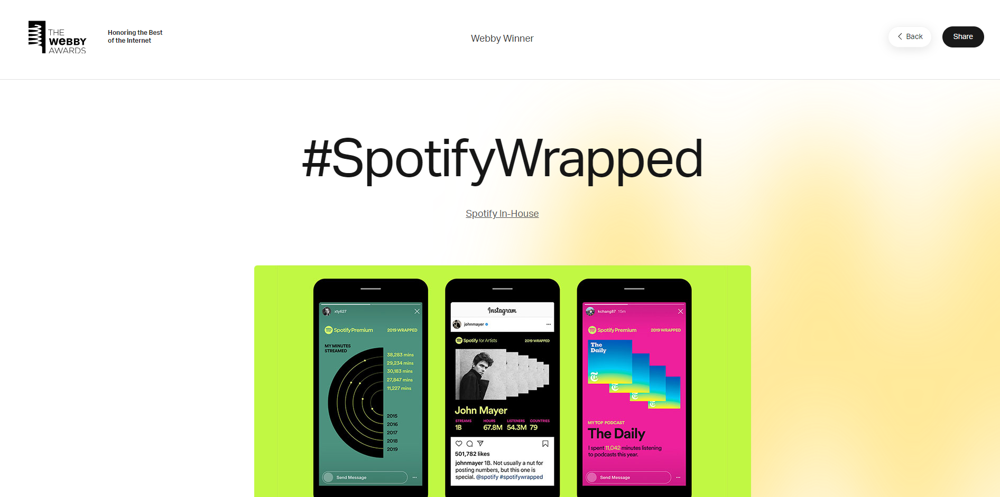

Awwwards: Mad
Descripción: La web "Mad" es un sitio interactivo que simula un hotel de los años 70, con gráficos coloridos y una navegación divertida..
Razones del análisis: Me ha gustado que cuando le ponías el cursor por encima de las tablets que mostraban la web, se iba moviendo y enseñando lo que es la web y su interfaz, haciéndolo más dinámico.
Mad
Webby Awards: Spotify Wrapped

Descripción: Spotify Wrapped ofrece una experiencia personalizada que resume los hábitos de escucha de cada usuario durante el año, de una manera interactiva y visualmente atractiva.
Razones del análisis: Me ha gustado cómo en la portada de presentación del proyecto, por detrás crea como una aurea que representa lo que realmente es el proyecto, tu propia aurea personalizada por la música que has estado escuchando este último año.
Spotify
FWA: The Cool Club
Descripción: The Cool Club es una plataforma que presenta cartas de juego animadas, basadas en íconos del diseño, combinando simplicidad con animaciones interactivas.
Razones del análisis: Me ha gustado cómo enfocaron su página web con sus animaciones en un color específico y cómo jugaban también con los contrastes al poner imágenes e ilustraciones.
The Cool Club
CSS Design Awards: Jomor Design
Descripción: Jomor Design es una agencia creativa que utiliza animaciones suaves y muy divertidas, con una estética moderna para atraer a los usuarios a explorar sus trabajos de diseño.
Razones del análisis: Me ha gustado mucho cómo jugaron con la animación del principio de levantar las cartas y su manera de que así pueda interactuar el espectador. Además, que se vaya creando la página web mientras bajas.
Jomor Design